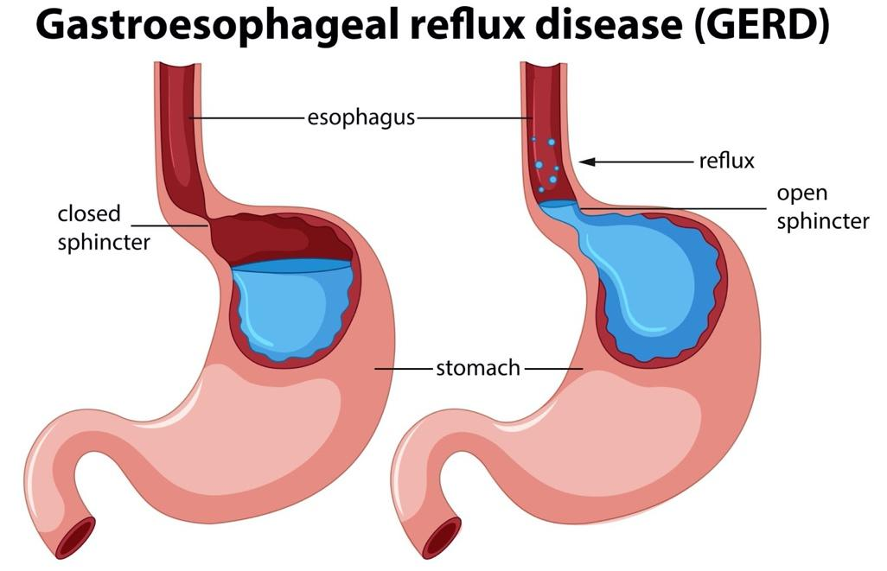

Acid Reflux
Acid reflux occurs when the stomach acid reoccuringly flows back up into the esophogus, the tube connecting your mouth and stomach. This “backwash” can cause irritation to the lining of your esophagus, which in turn causes a burning feeling in your chest region.
Heartburn #
One of the main symptoms of acid reflux is called heartburn. It is a burning sensation felt in the center of the chest region of the body. This can come from eating large, spicy, or fatty meals and not a cause for major concern. However, this can be a symptom of an underlying condition.
Gastroesophageal Reflux Disease (GERD) #
GERD is a more severe form of acid reflux where the valve between the stomach and the esophagus, known as the lower esophageal sphincter (LES), becomes damaged or weakened. This permits the stomach acid to continuously travel back up into the esophagus. If GERD remains untreated, the stomach acid can eventually damage the lining of the esophagus and lead to other disorders or diseases.
In treating GERD, many who implement lifestyle modifications such as weight loss, adjusting one’s diet, or sleeping positions can be beneficial. Other intervention methods used include medication, and in severe cases an anti-reflux surgical procedure may be performed.